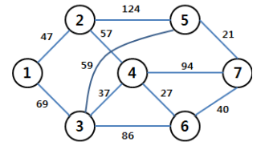

정올이는 GSHS에서 연구활동 교수님을 뵈러 A대학교를 가려고 한다.
출발점과 도착점을 포함하여 경유하는 지역 n개, 한 지역에서 다른 지역으로 가는 방법이
총 m개이며 GSHS는 지역 1이고 A대학교는 지역 n이라고 할 때
대학까지 최소 비용을 구하시오.
단, n은 10 이하, m은 30 이하, 그리고 한 지역에서 다른 지역으로 가는 데에 필요한 비용은
모두 200 이하 양의 정수이며 한 지역에서 다른 지역으로 가는 어떠한 방법이 존재하면
같은 방법과 비용을 통해 역방향으로 갈 수 있다.
다음 그래프는 예를 보여준다.
(단, 정점a->정점b로의 간선이 여러 개 있을 수 있으며, 자기 자신으로 가는 정점을 가질 수도 있다.)

최소 비용이 드는 경로 : 1→3→5→7, 최소 비용 : 69+59+21=149
첫 번째 줄에는 정점의 수 n과 간선의 수 m이 공백으로 구분되어 입력된다.
다음 줄부터 m개의 줄에 걸쳐서 두 정점의 번호와 가중치가 입력된다.
(자기 간선, 멀티간선이 있을 수 있다.)
7 11
1 2 47
1 3 69
2 4 57
2 5 124
3 4 37
3 5 59
3 6 86
4 6 27
4 7 94
5 7 21
6 7 40
대학까지 가는 데 드는 최소 비용을 출력한다. 만약 갈 수 없다면 “-1”을 출력.
149
INF = int(1e9)
n,m= map(int, input().split())
board = [[0 for i in range(n+1)] for j in range(n+1)]
for i in range(m):
a,b,c = map(int,input().split())
board[a][b] = c
board[b][a] = c
visited = [False for i in range(n+1)]
ans = INF
def fun(here, sumf):
global ans
if here == n:
print(sumf)
if ans > sumf:
ans = sumf
return
for nx in range(n+1):
if board[here][nx] != 0 and \
not visited[nx]:
visited[nx] = True
fun(nx, sumf + board[here][nx])
visited[nx] = False
fun(1,0)
visited[1] = True
print(ans)
목록으로 돌아가기